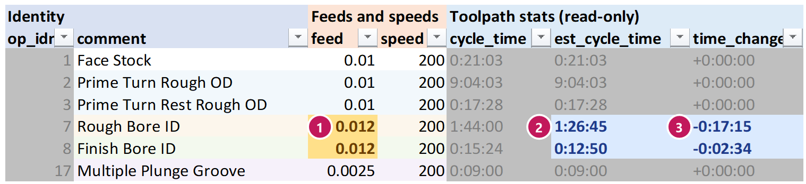

The cycle time estimate
What this is for
Each op row has cycle_time (Mastercam's own time, as dumped) and est_cycle_time (the
live estimate). They start the same. When you change the feed, speed, CSS/RPM, max RPM or per rev /
per min on a row, the estimate moves at once – and so do the Summary's totals. This page says how it works and
where it can be wrong.
When to use it
Whenever you judge a change by its time – and before you trust a big saving.
Steps
How the estimate is worked out:
- At the dump, the tool walks each op's toolpath, move by move: how long each cutting move is, and at what diameter.
- For each move it works out the time: per minute: length ÷ feed. Per rev: length ÷ (feed × RPM). With CSS, the RPM at that diameter is SFM × 3.82 ÷ diameter – but never more than the op's max RPM.
- These sums are written into the sheet as formulas tied to the row's own cells. Change a cell and the formula follows.
- Everything else – rapids, tool changes, dwells – is kept as it was. It does not change with feed or speed.
What it cannot know until you regenerate: a new depth of cut, stepover, stock to leave or number of passes changes the toolpath itself. The estimate does not move for those. Load, regenerate, and dump again to see their time.
On real parts, the estimate matches Mastercam's own cycle time to within seconds per op.
Worked example
Op 7, Rough Bore ID: 1:44:00 in all, of which 1:43:28 is cutting. The feed goes from 0.010 to 0.012 per rev.
| Before | After | |
|---|---|---|
feed | 0.010 | 0.012 |
| Cutting time | 1:43:28 | 1:26:13 (× 0.010 ÷ 0.012) |
| Everything else | 0:00:32 | 0:00:32 |
est_cycle_time | 1:44:00 | 1:26:45 |
time_change | +0:00:00 | -0:17:15 |
Where max RPM bites. Facing with CSS at 200 SFM and a max of 3500 RPM: at 1″ diameter the spindle turns 764 RPM; near the center, at 0.2″, it would need 3820 RPM but stops at 3500. Raising the SFM speeds up the outside of the face, not the middle. The estimate knows this, move by move.

